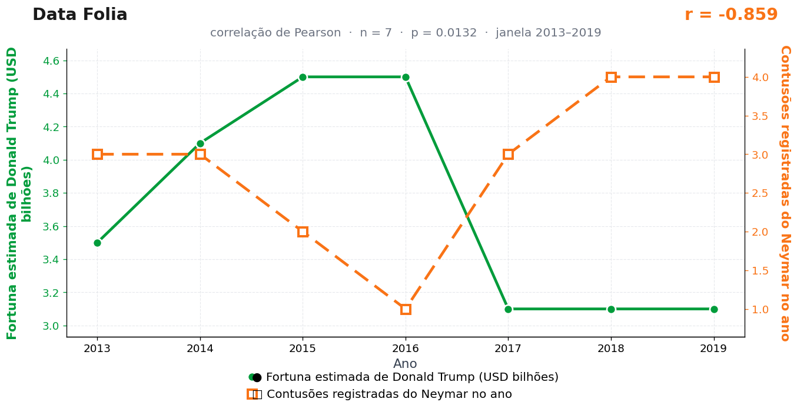

Post de 08/06/2026
A teoria
Grandes fortunas funcionam como blindagem global. Quando elas estão firmes, o mundo desliza: gramado bem irrigado, contratos cumpridos e contato em campo que termina em falta marcada — não em ressonância magnética.
Neymar é o sensor mais sensível dessa conexão. Cada bilhão que Donald Trump perde no ranking da Forbes ecoa, com pontualidade, em mais um machucado no departamento médico. O tornozelo do camisa 10 é o termômetro do mercado livre — quando o índice cai em Nova York, é a canela dele que sente.
A correlação não deixa margem para dúvida moral. No fim, para evitar corrupções, torna-se necessário proteger o menino Ney. Cada queda em campo é, na prática, um ajuste cambial mal feito por um banqueiro distraído lá em Manhattan. Proteger o tornozelo virou política monetária.
Nosso conselho editorial chegou a propor um produto financeiro: proteção automática para o menisco toda vez que a Forbes revisa um patrimônio para baixo. O compliance vetou, mas o gráfico segue de pé, firme como um tornozelo em ano de bolsa em alta.
Enquanto isso, o departamento médico segue lendo o caderno de economia antes de escalar o time. Por precaução.
A teoria é ficção; a correlação é real: r = −0,86 (n = 7, p = 0,013).
Os dados por trás

- Fortuna estimada de Donald Trump (USD bilhões) — 7 pontos anuais, período 2013–2019. Fonte: Forbes — The World's Billionaires.
- Contusões registradas do Neymar no ano — 7 pontos anuais, período 2013–2019. Fonte: Transfermarkt / imprensa esportiva.
Como as correlações deste site são encontradas — e por que você não deve confiar nelas — está explicado na nossa metodologia.
Por que isso acontece?
As duas séries têm pouquíssimos valores distintos: a fortuna estimada de Trump oscila entre 3,1 e 4,5 bilhões de dólares e as contusões de Neymar variam entre 1 e 4 por ano. Com números tão "quantizados" e apenas 7 observações, bastam dois ou três movimentos coincidentes para o coeficiente de Pearson disparar. Não há sinal fino aqui — há poucos degraus que, por sorte, desceram e subiram em anos parecidos.
O p-valor de 0,013 parece convincente, mas ele só teria esse significado se este fosse o único teste que fizemos, planejado de antemão. Não foi: o Data Folia calcula milhares de pares de séries e publica os vencedores. Em mil pares totalmente aleatórios, cerca de dez passam de p < 0,01 por puro acaso — e são justamente esses que viram post. O nome técnico é comparações múltiplas (ou data dredging), e é o motor deliberado deste site.
Por fim, não existe mecanismo plausível ligando o ranking da Forbes ao departamento médico de um clube francês. Quando a história causal precisa de um banqueiro distraído em Manhattan para funcionar, ela é o alerta — não a explicação.
Post de 08/06/2026 · publicado também no Instagram @datafolia.